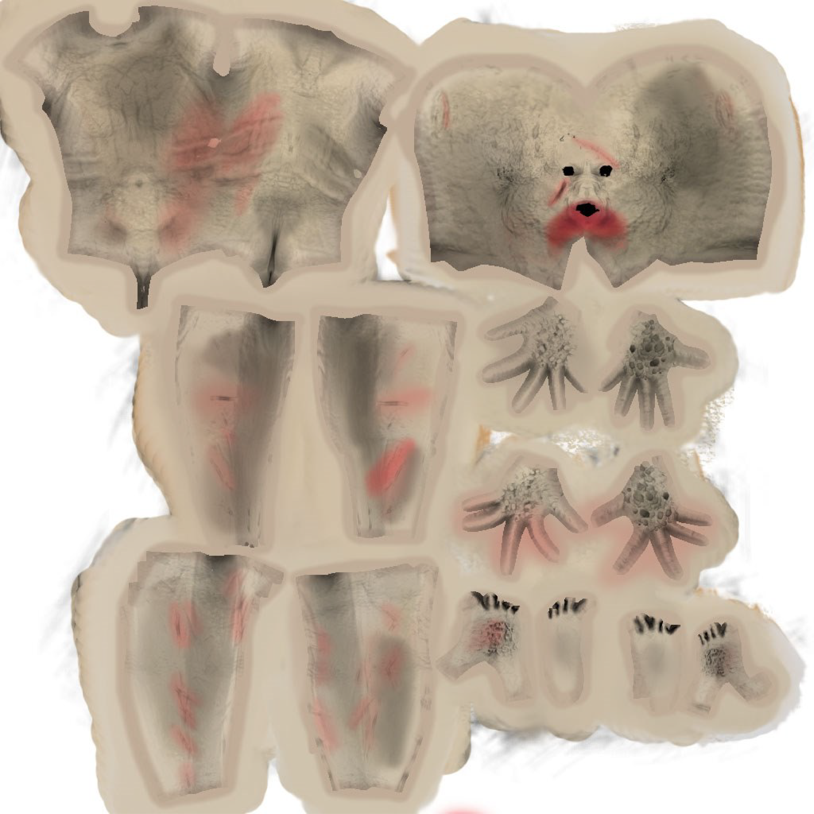
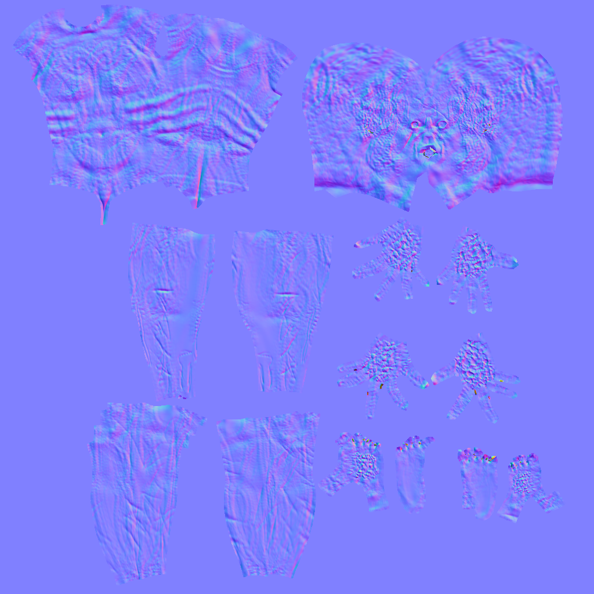
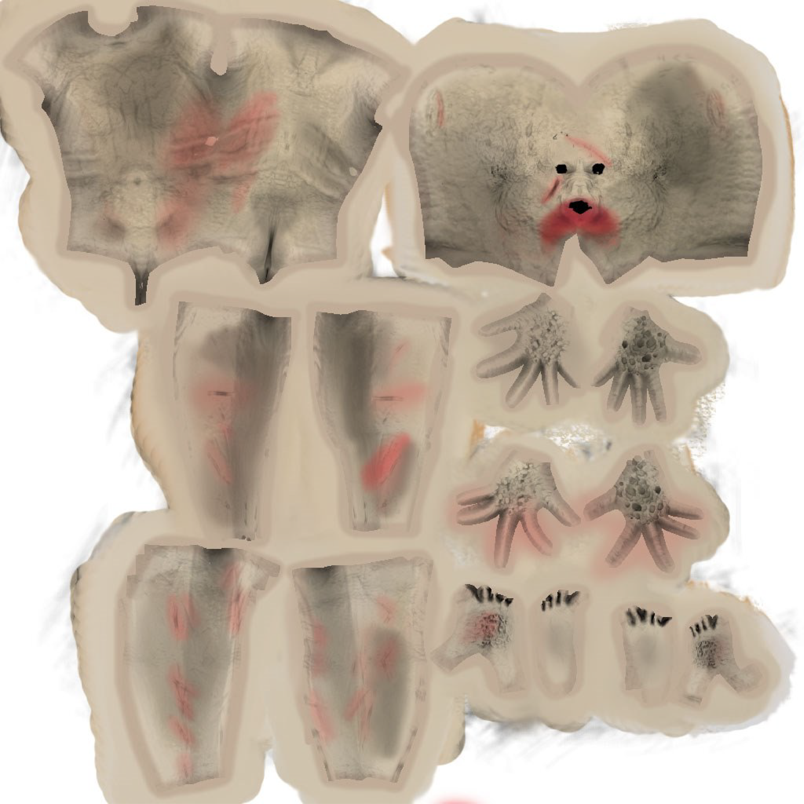
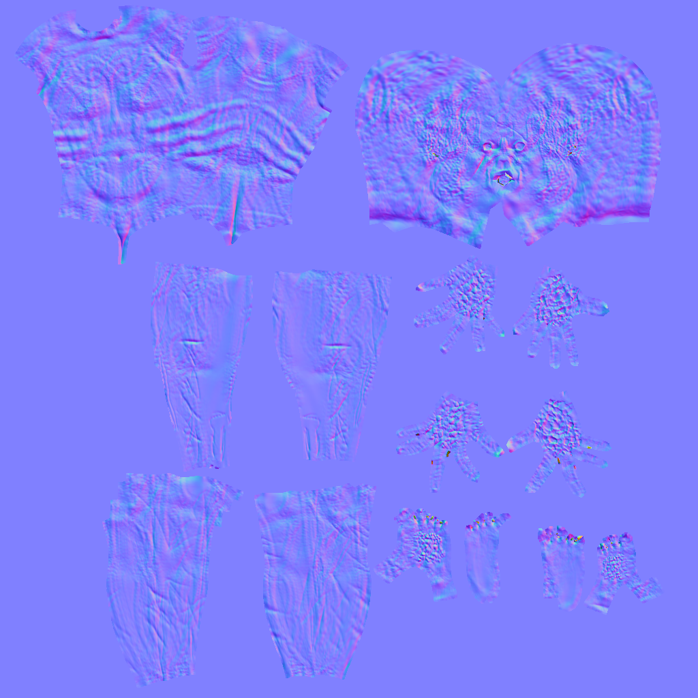
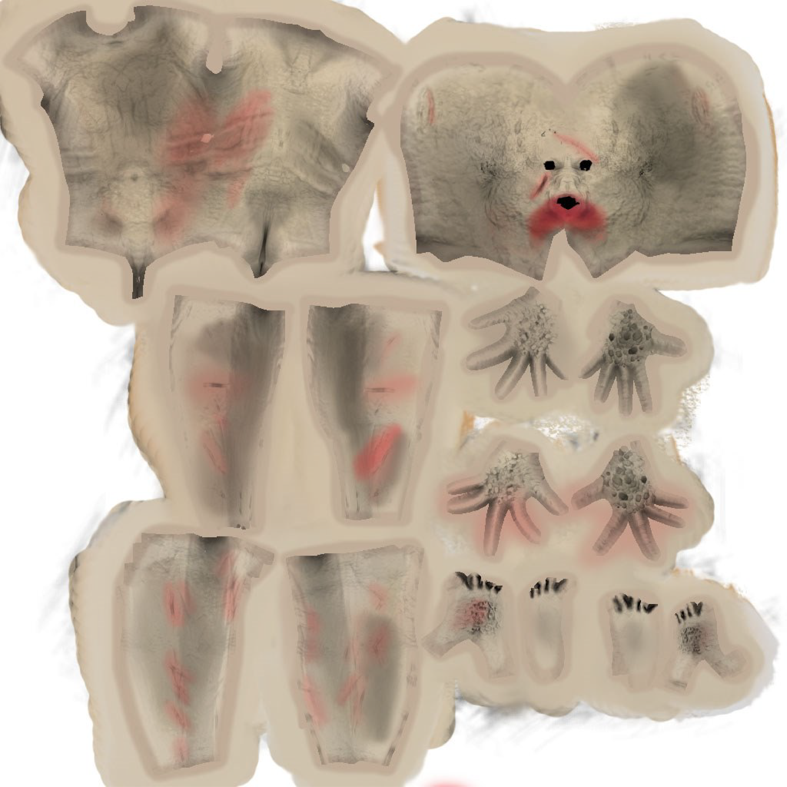
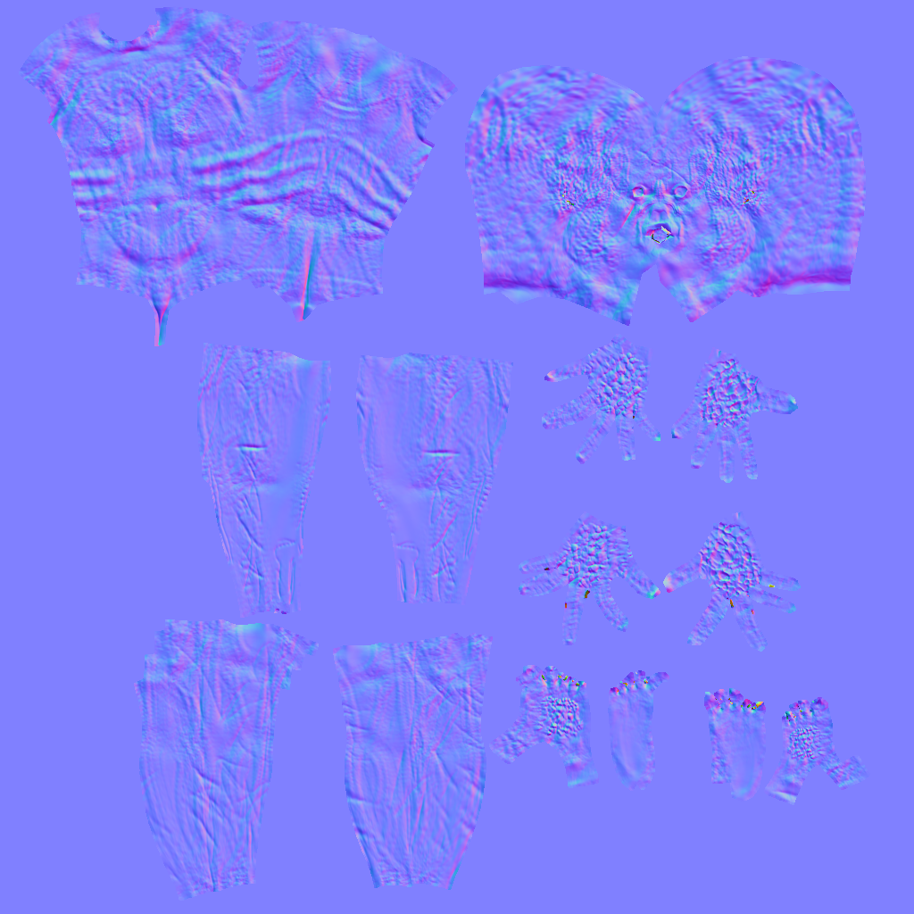

Uma criatura para um game de terror em VR. Modelo, textura e normal map de minha autoria.
 



Modelo do Homem de Ferro, textura e rigging feitos para a disciplina Ferramentas de Design do curso Jogos Digitais da Unisinos.
Os modelos da árvore de Lego e da carroça foram feitos para a disciplina Ferramentas de Design do curso Jogos Digitais da Unisinos. Apenas os modelos são de minha autoria, as texturas foram retiradas da internet com as devidas licenças.
Os modelos da imagem a seguir foram produzidos para uma gamejam e foram utilizados no game Sapurai. Modelos e texturas são de minha autoria. Uso de normal map nas paredes e na escada.
Uma criatura para um game de terror em VR. Modelo, textura e normal map de minha autoria.


Os modelos do vídeo abaixo são do game Econquest, que pode ser visto na seção de programação do portfolio. Todos os modelos, rigging, texturas e animações de Econquest foram feitos por mim.